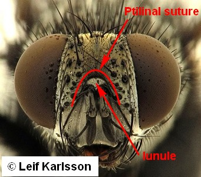
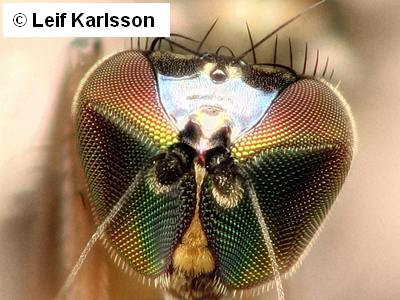

Key to sections of Muscomorpha
1.
- Ptilinal suture and lunule present. (A suture above the lunule going down on either side of the antennae).

Schizophora
- Ptilinal fissure and lunula absent. (A suture can exist above the antennae or surround the clypeus).

Aschiza